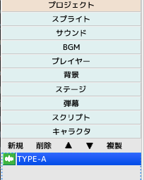
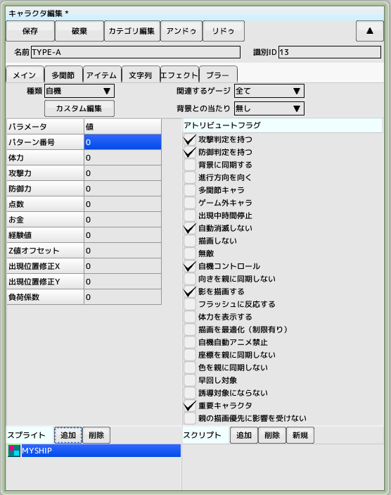
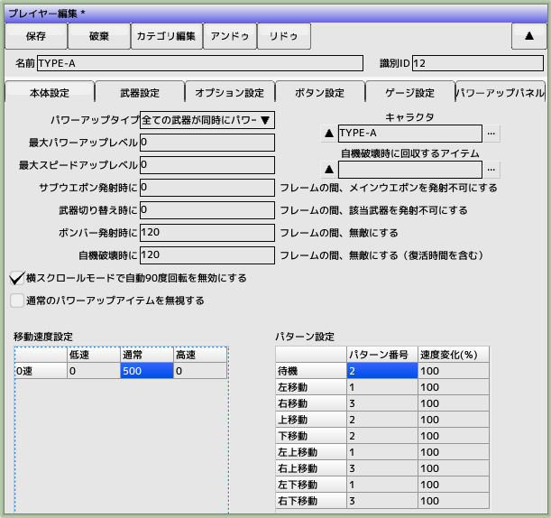
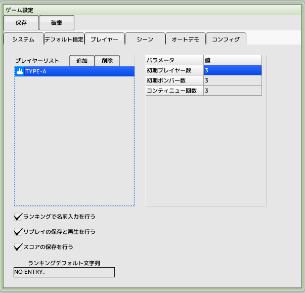
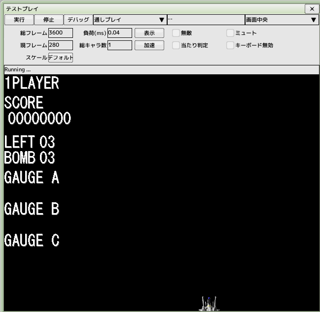

■元のページへ戻る
■元のページへ戻る
2.プレイヤーを作成する
人間が操作するための自機（プレイヤー）を作成します
複数のプレイヤーを作成し、ゲーム開始時に選択させることも可能です
プレイヤーに必要なパーツは、「プレイヤー」「キャラクタ」「スクリプト」の三つになります
まずはキャラクタから作成していきます
前回のチュートリアルで作成したプロジェクトファイルを開いておいてください

プレイヤー用キャラクタの作成
プロジェクトのキャラクタをクリックして新規ボタンを押し、キャラクタを作成します
作成したキャラクタをダブルクリックして開き、名前を'TYPE-A'とします

キャラクタのパラメータを入力
種類...自機
アトリビュートフラグ...右図のようにチェックを付けます
パラメータ...全部0のままでよい
スプライト...追加ボタンを押して前回作成したスプライト'MYSHIP'を登録します
スクリプトは後で追加するので今回はいりません
スクリプトを追加すると自機が破壊された時に、消滅するようになります
また、メインタブ以外のタブも触る必要はありません

プレイヤーのパラメータを入力
プロジェクトのプレイヤーをクリックして新規ボタンを押し、プレイヤーを作成します
名前を'TYPE-A'とします
キャラクタ項目の...をクリックして先ほど作成したキャラクタ'TYPE-A'を選択します
移動速度設定の通常欄に500
パターン設定の各項目にパターン番号を入力します
移動する方向によってパターン番号を変えています
パターン番号はスプライト編集を開いて確認してください

ゲーム設定にプレイヤーを登録する
メインメニューの「設定」->「ゲーム設定」を開き、プレイヤータブを選択します
(ショートカットキーはF8)
プレイヤーリストの追加をクリックし、先ほど作成したプレイヤー'TYPE-A'を登録します
後々複数のプレイヤーを作成した場合には、プレイヤーリストへ追加していきます

テスト実行する
メインメニューの「テスト」->「実行」を選ぶとテストプレイウインドウが開き
自動でスタートします
(ショートカットキーはF5)
停止ボタン（ショートカットキーはF6）を押すと停止します
画面下部にプレイヤーが出現し、カーソルキーもしくはジョイパッドで
上下左右に移動できれば完了です
■ページ上部へ戻る